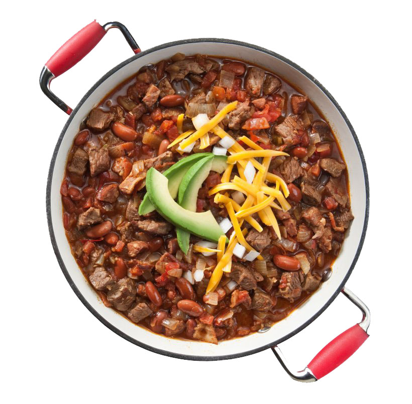
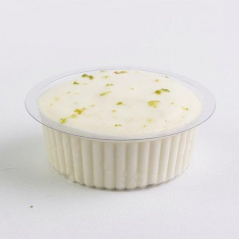
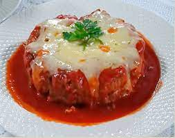

Voltar
Acarajé
Ingredientes:
1 kg de feijão fradinho
4 cebola picadas
Sal a gosto
Azeite de dendê a gosto
Molho:
Pimenta malagueta
Azeite dendê
100 g de camarão
Modo de Preparo:
Bata o feijão seco só para quebrar no liquidificador.
Coloque de molho em bastante água, por mais ou menos 1 hora e meia para soltar a casca e os pontinhos pretos.
Mude sempre a água e tire a casca e os pontinhos pretos que ficam boiando, escorra a água.
Bata no liquidificador o feijão com as cebolas e o sal.
Se precisar, ponha um pouco de água para bater melhor.
Coloque a massa em uma vasilha e bata bem para ficar bem macia.
Para bater, use uma colher de pau.
Acrescente dendê em uma frigideira para esquentar bem.
Com uma colher, pegue a massa e coloque para fritar.
Depois de frito coloque-os em uma vasilha forrada com papel absorvente.
Molho:
Machuque umas pimentas malaguetas.
Ponha um pouco de dendê para esquentar e frite um pouco as pimentas machucadas.
Acrescente o camarão e frite um pouco mais, tire do fogo e misture com um pouco de vatapá.
Chamaria o Beto Roleiras, o Matheus2Phobia e o Raian, porquê os são meus melhores amigos.
Chilli

Ingredientes:
1 colher de sopa de azeite
2 colheres (sopa) de cebola desidratada
4 dentes de alho amassados
1 colher dechá de orégano
1 folha de louro
300 g de carne moída
2 xícaras de chá de purê de tomate
1 colher de café de cominho
2 xícaras de chá de feijão cozido (escorrer o caldo)
1 colher de sopa de salsa picada
Molho de pimenta
4 colheres de sopa de queijo prato ralado grosso
Modo de Preparo:
Aqueça o azeite em uma panela e refogue a cebola, o alho, o orégano, o louro e a carne moída.
Junte o purê de tomate, o cominho e deixe ferver até engrossar um pouco.
Acrescente o feijão e a salsa picada.
Deixe ferver por mais 10 minutos.
Adicione o molho de pimenta e desligue o fogo.
Passe para um refratário e polvilhe o queijo prato ralado.
Chamaria o Neil deGrasse Tyson por ser um homem que eu admiro muito.
Pizza

Ingredientes:
1 kg de farinha de trigo
30 g de fermento biológico
3 xícaras de água morna
3/4 xícaras de óleo
1 colher (chá) de sal
1 colher (chá) de açúcar
1 colher (sopa) de pinga
Misture o fermento, o sal e o açúcar em um pouco de água morna, até que o fermento esteja completamente dissolvido.
Em seguida, adicione metade da medida de farinha de trigo, o óleo e mexa até criar uma consistência pastosa.
Acrescente o restante da farinha de trigo, a pinga, a água morna e misture bem.
Assim que a massa desgrudar das mãos, deixe crescer por 30 minutos.
Abra os discos, fure a massa com um garfo e pincele o molho.
Leve ao forno médio (180° C), preaquecido, por 15 minutos.
Chamaria o Sérgio Sacani, porquê ele é extremamente interessante.
Mousse

Ingredientes:
1 lata de leite condesado
1 lata de creme de leite sem soro
1 lata de suco de qualquer sabor
Modo de Preparo:
Adicione o leite condensado no liquidificador. Depois adicione o creme de leite, logo após coloque o suco ou fruta e bata por pelo menos 2 minutos.
Leve a geladeira e deixe gelar por 1 hora e está pronto.
Chamaria a Juliana minha namorada, perfeita e incrivel. (PS ela estava me batendo nessa hora)
Pimentão Recheado
Ingredientes:
2 pimentões médios ou grandes
300 g de carne moída
1/2 cebola picada
2 dentes de alho picado
Sal a gosto
1 pedaço pequeno de bacon (opcional)
1 cenoura pequena (opcional)
2 fatias de presunto
2 fatias de queijo
3 colheres (sopa) de requeijão
Modo de Preparo:
Lave bem os pimentões.
Faça um buraco no pé de cada pimentão, como uma tampa.
Retire toda a semente de dentro limpando tudo.
Deixe reservado.
Tempere a carne e deixe reservada também.
Chamaria o John Xina, porquê preciso de créditos sociais.
Polpetone

Ingredientes:
1 kg de carne moída (acém)
sal, salsinha picada e pimenta-do-reino branca a gosto
1 cebola pequena picada
4 dentes grandes de alho amassados
1/2 pimentão pequeno bem picado
1 colher (café) de cominho moído (opcional)
1 colher (sopa) de farinha de trigo
400 g de mussarela ralada no ralo grosso
Modo de Preparo:
Adicione a carne em uma vasilha e junte todos ingredientes.
Misture muito bem, com as mãos mesmo, faça um hambúrguer e coloque a mussarela.
Faça outro hambúrguer e ponha em cima da mussarela.
Feche as bordas, apertando com a ponta dos dedos.
Faça assim até terminar toda a carne (mas cuidado para não fazer os hambúrgueres muito grossos). Coloque um frigideira antiaderente no fogo, com duas colheres de óleo e deixe aquecer bem.
Sele um polpetone de cada vez e repita a operação com todos até terminar.
Espalhe um pouco de molho quente no fundo de uma forma.
Coloque os polpetones.
Jogue mais um pouco de molho por cima e reserve um pouco para o final.
Cubra com papel-alumínio com a parte brilhante virada para dentro.
Leve ao forno preaquecido por 20 minutos em temperatura média.
Apague o fogo e polvilhe mussarela ralada por cima.
Salpique salsinha e cebolinha picadas em cima da mussarela.
Despeje em cima da mussarela o restante do molho.
Deixe no forno quente, mas apagado mesmo, para derreter a mussarela.
Sirva em seguida com arroz e uma salada do seu gosto.
Chamaria o Mamãe Fali, pra perguntar como ele pode ser tão retardado.